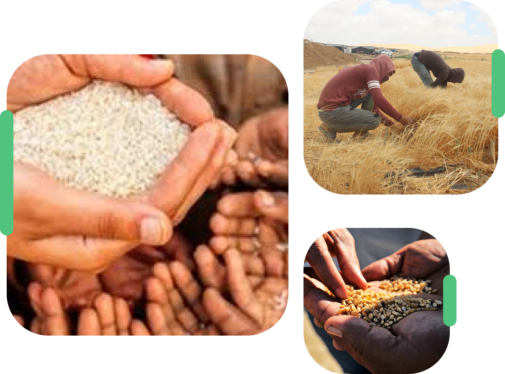
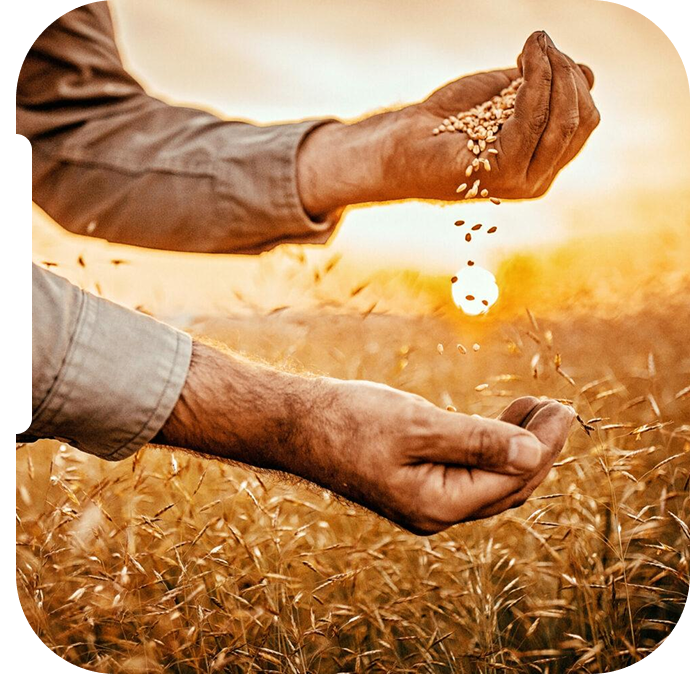
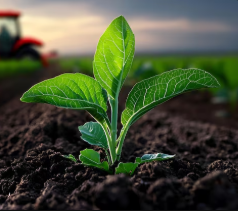
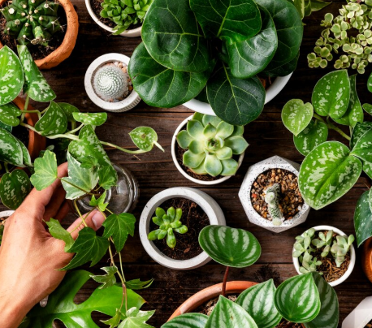
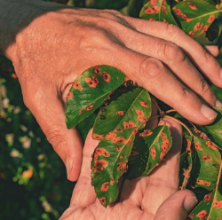

نحو مستقبل آمن غذائيًا ومستدام
نسعى لتعزيز الوعي بأهمية الأمن الغذائي وتوفير موارد عملية للمزارعين والباحثين.

الأمن الغذائي
يعني أن يكون الطعام متوفرًا للجميع بشكل كافٍ، آمن وصحي، وفي أي وقت. أي أنه ضمن أن كل شخص يحصل على ما يحتاجه من غذاء صحي يساعده على العيش النشط. تحقيق الأمن الغذائي يقلل من الجوع، يحسن صحة الناس ويعزز المجتمعات والاقتصاد.


الزراعة

النباتات والمحاصيل

أمراض النباتات
إحصائيات
توفر هذه الإحصائيات نظرة عامة على الوضع الحالي للأمن الغذائي في الأردن، مما يساعد في فهم التحديات والفرص المتاحة لتحسين الوضع.
56%
نسبة الأراضي المزروعة
23%
نسبة الهدر الغذائي
31%
نسبة الاكتفاء الذاتي